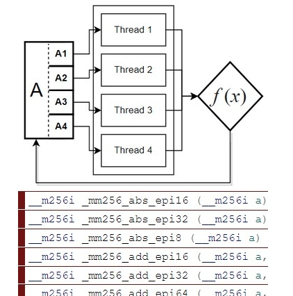

• Rastériseur logiciel
Je suis entrain de programmer un rastériseur logiciel 3D en C. Je n'utilise pas de librairies graphiques alors mon code dois procéder aux transformations mathématiques. Mon but est de pouvoir afficher des personnages et jouer des animations pour l'utiliser dans un moteur 3D.

• Sujets de recherche
Les sujets de recherche qui m'intéressent principalement sont le multithreading et les opérations vectorisées. Ils sont essentiels dans la conception d'un moteur de rendu logiciel capable de rivaliser avec l'accélération matérielle de la carte graphique.